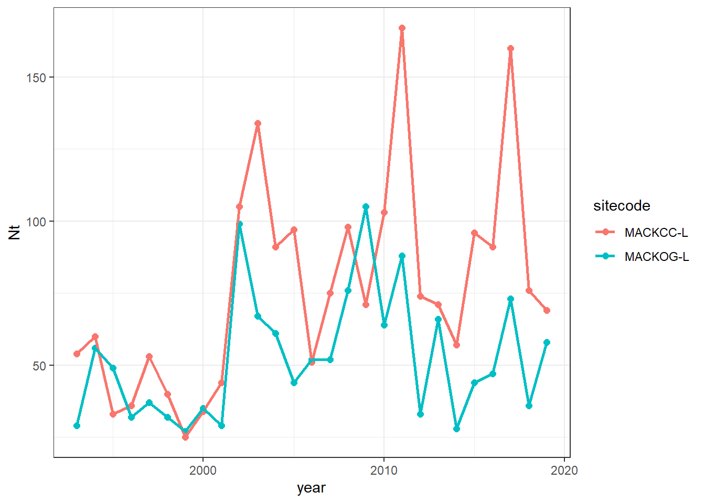
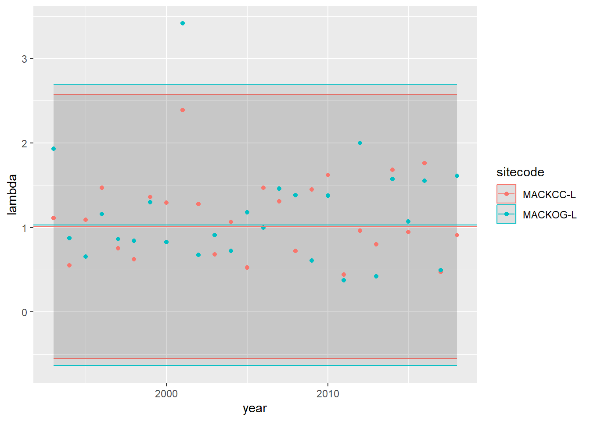
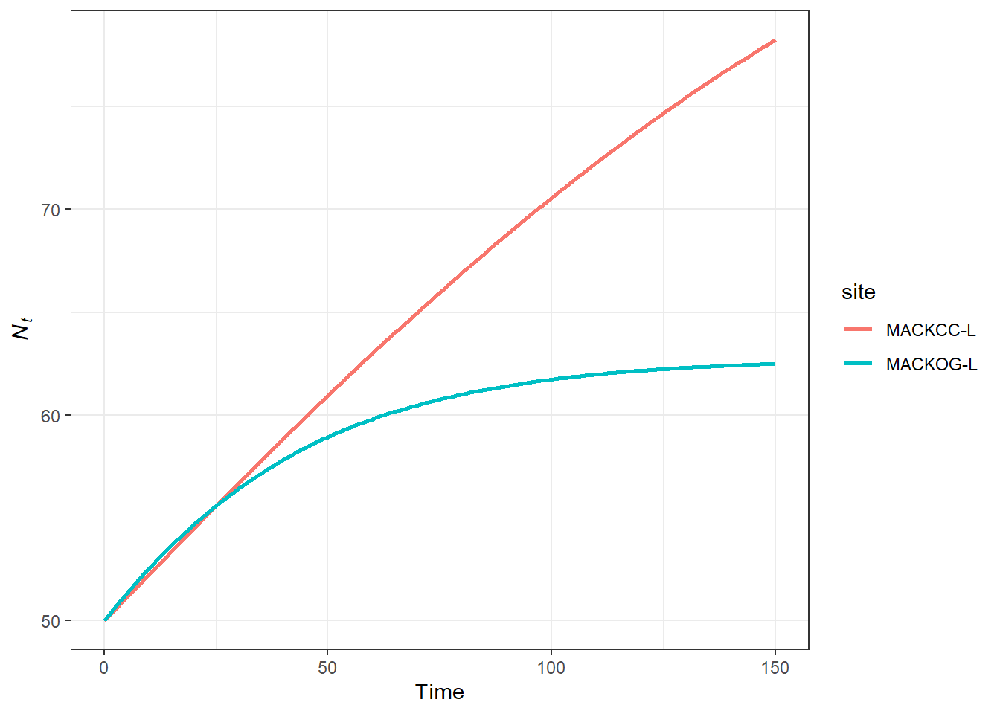
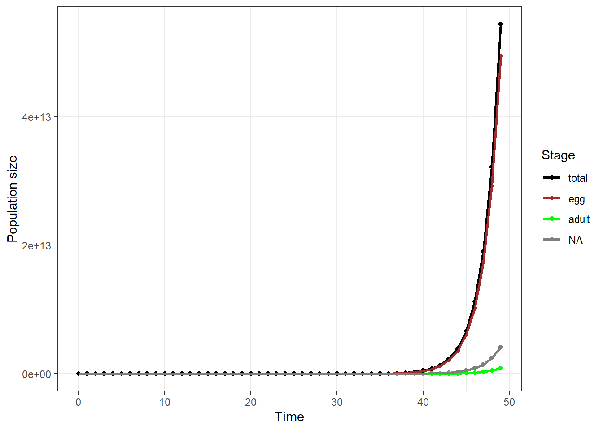
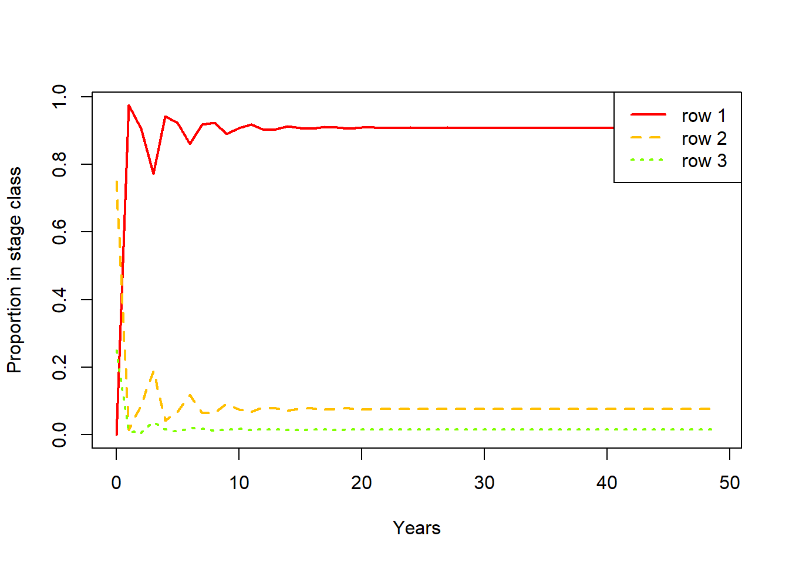

Please, using quarto or rmarkdown, answer the questions below. You can use the class notes, the recommended books, and other web materials to help answer the questions. You can work on the homework in groups, but please independently submit pdf document containing answers and code.
In two weeks (10/31/23 by 11:59pm), please submit your pdf file to CANVAS using the following filename structure LastName_HW2_Filetype_Date (e.g., Santos_HW2_R_20230927). Again, you can share and work together on the code, but independently, submit your answers to the short answer questions in your own words and as markdown text under each question. Here are links to resources about quarto and rmarkdown.
Please reach out if you have any questions about the hw or how to make a pdf using quarto or rmarkdown.
Data for questions
For this section 1 and 2 of this homework, you will use a dataset from the lterdatasampler R package https://lter.github.io/lterdatasampler/ called “and_vertebrates”. The lterdatasampler R package was created by the NSF LTER program https://lternet.edu to provide data examples for educational purposes. This dataset consists of the populations of Coastal giant salamander (Dicamptodon tenebrosus) in two standard reaches of Mack Creek in the H.J. Andrews Experimental Forest that have been monitored since 1987. The two standard reaches are in a section of clear-cut forest (ca. 1963) and an upstream old-growth forest (>500 years). Sub-reaches are sampled with 2-pass electrofishing, and all individuals are measured and weighed.
Section 1 (15 pts)
Upload “and_vertebrates” into R-Studio (remember you have to download the lterdatasampler R package before). Using R, create a new dataset by selecting only salamander data from the lower reach section, then calculate abundance (total number of individuals collected) by sitecode and year for Coastal giant salamander. Please, use “Nt” to name the column with the abundance data. Here are details about the “and_vertebrates” data useful to answer this question (look for info in the “Table Column Descriptions” tab in Data Entities - https://portal.edirepository.org/nis/metadataviewer?packageid=knb-lter-and.4027.14 (3 pts).
library(lterdatasampler)library(tidyverse)
── Attaching core tidyverse packages ──────────────────────── tidyverse 2.0.0 ──
✔ dplyr 1.1.2 ✔ readr 2.1.4
✔ forcats 1.0.0 ✔ stringr 1.5.0
✔ ggplot2 3.4.3 ✔ tibble 3.2.1
✔ lubridate 1.9.2 ✔ tidyr 1.3.0
✔ purrr 1.0.2
── Conflicts ────────────────────────────────────────── tidyverse_conflicts() ──
✖ dplyr::filter() masks stats::filter()
✖ dplyr::lag() masks stats::lag()
ℹ Use the conflicted package (<http://conflicted.r-lib.org/>) to force all conflicts to become errors
Plot annual estimates of salamander abundance per sitecode (2 pts).
ggplot(df, aes(year,Nt, color = sitecode))+geom_point(size =2)+geom_line(linewidth =1)+theme_bw()

Short Essay Question: How do the temporal trends of Coastal giant salamander between the sitecode compare (5 pts)?
Overall the clear cut forest tends to support higher abundance of salamanders than the old growth site. Each populations tends to have fluctuations at similar times, but the old growth populations tends to be more stable.
Using R, calculate lambda from one year to the next (i.e., for each time step) for the two reach (sitecode) you selected. Try using either a for-loop or functions (1 pt).
Calculate the mean(λ) and sd(λ) for the two reaches using your calculation from Q1.4. Remember to use the geometric mean and its standard deviation (1 pt).
# A tibble: 2 × 4
sitecode mean test sd
<chr> <dbl> <dbl> <dbl>
1 MACKCC-L 1.01 1.01 1.56
2 MACKOG-L 1.03 1.03 1.66
Using ggplot, plot the lambda for each year. Add a horizontal line for the mean(λ) calculated in question 5 and ribbon around the line to indicate the sd(λ) (3 pt).
d =left_join(df, g, by ='sitecode') |>drop_na()ggplot(d, aes(year, lambda, color = sitecode))+geom_ribbon(aes(ymin = mean-sd, ymax = mean+sd), alpha =0.1)+geom_point()+geom_hline(data = g, aes(yintercept = mean, color = sitecode))

Section 2 (23 pts)
Using the same dataset from Section 1, estimate \(K\) from your \(\lambda\) and abundance estimates for both reaches (3 pts). Hint: Remember the linear relationship between density and per-capita growth rate in the density-dependent model discussed in class and the workshop.
lcc=lm(per.capita ~ Nt, data = df %>%filter(sitecode =='MACKCC-L'))summary(lcc)
Call:
lm(formula = per.capita ~ Nt, data = df %>% filter(sitecode ==
"MACKCC-L"))
Residuals:
Min 1Q Median 3Q Max
-0.68920 -0.24592 -0.07789 0.21188 1.09486
Coefficients:
Estimate Std. Error t value Pr(>|t|)
(Intercept) 0.541209 0.197156 2.745 0.0113 *
Nt -0.005675 0.002320 -2.446 0.0222 *
---
Signif. codes: 0 '***' 0.001 '**' 0.01 '*' 0.05 '.' 0.1 ' ' 1
Residual standard error: 0.4308 on 24 degrees of freedom
(1 observation deleted due to missingness)
Multiple R-squared: 0.1995, Adjusted R-squared: 0.1662
F-statistic: 5.982 on 1 and 24 DF, p-value: 0.02216
Kcc =-lcc$coefficients[1]/lcc$coefficients[2]log=lm(per.capita ~ Nt, data = df %>%filter(sitecode =='MACKOG-L'))summary(log)
Call:
lm(formula = per.capita ~ Nt, data = df %>% filter(sitecode ==
"MACKOG-L"))
Residuals:
Min 1Q Median 3Q Max
-0.6420 -0.3238 -0.1422 0.2878 1.8807
Coefficients:
Estimate Std. Error t value Pr(>|t|)
(Intercept) 0.991049 0.277543 3.571 0.00155 **
Nt -0.015790 0.004895 -3.226 0.00361 **
---
Signif. codes: 0 '***' 0.001 '**' 0.01 '*' 0.05 '.' 0.1 ' ' 1
Residual standard error: 0.5438 on 24 degrees of freedom
(1 observation deleted due to missingness)
Multiple R-squared: 0.3024, Adjusted R-squared: 0.2734
F-statistic: 10.41 on 1 and 24 DF, p-value: 0.003608
Kog =-log$coefficients[1]/log$coefficients[2]Kcc
(Intercept)
95.36529
Kog
(Intercept)
62.76384
Using a discrete density-dependent growth model, project the population growth for salamander in both reaches to 150 years based on the carrying capacity values estimated in Q2 and a starting population size of 50 individuals. Hint: \(1 + r_d = \lambda\); See Gotelli pages 35-37 and pages Stevens 62-68 (3 pts).
Using ggplot, plot the population projections for each reach (1 pts).
ggplot(pop, aes(time, Nt, color = site))+geom_line(size =1) +labs(x ='Time', y =expression(italic(N[t])))+theme_bw()
Warning: Using `size` aesthetic for lines was deprecated in ggplot2 3.4.0.
ℹ Please use `linewidth` instead.

Short essay question: How do the projections for each reach differ? Did the population get as far as the carrying capacity? Why or why not? If not, how many years are required to reach the carrying capacity? When at carrying capacity, do the population fluctuate around K? Why or Why not? (5 pts)
The population in the old growth forest has a lower carying capacity than the clear cut and approaches carrying capacity around 100 years. The populations do not fluctuate because r is low.
Project the population of salamander in the two reaches for 150 years using a discrete density-dependent model with environmental stochasticity. Run the projections 50 times for each reach (i.e., 50 projections per reach) (5 pts).
Use the 50 as \(N_0\), carrying capacity (\(K\)) values estimated in Q2, and at each time step, use a randomly determined \(r_d\) based on the mean and standard deviation of \(\lambda\) calculated in Q1.5 – Hint: rtruncnorm() function in R and for loops (e.g., Wickham and Grolemund Chapter 17).
Using ggplot, plot a histogram (or density plot) of the population size after 150 year for each reach with a vertical line of the carrying capacity (1 pts).
Short essay question: How does the population size at time 150 compare between each reach? How do the estimates relate to the carrying capacity? (5 pts).
They both always reached carrying capacity
Section 3 (19 pts)
Convert the loop diagram (life cycle graph) above into a projection matrix (1 pt).
A =matrix(c(0,0,100,0.1,0.5,0,0,0.3,0.2), nrow =3, byrow = T)A
Create a starting population vector based on the life stages of this insect species: egg (N = 0), larvae (N = 30), adult (N = 10). Project the population up to 50 years using the starting population vector and the projection matrix you created (hint: A%*%n(t); See Stevens Chapter 2 pages 34-40) (5 pts).
library(popbio)n =c(egg =0, larvae =30, adult =10)pop =pop.projection(A, n, 50)pop
Plot your results using ggplot, popbio, or base R plotting functions. Plot the projection for each stage class (2 pts).
pp =tibble(time =as.numeric(colnames(pop$stage.vectors)),egg = pop$stage.vectors[1,],larvae = pop$stage.vectors[2,],adult = pop$stage.vectors[3,],total = pop$pop.sizes) %>%pivot_longer(egg:total, names_to ='stage', values_to ='n') %>%mutate(stage =factor(stage, levels =c('total','egg','larve','adult')))ggplot(pp, aes(time, n, color = stage)) +geom_point() +geom_line(size =1) +labs(x ='Time', y ='Population size', color ='Stage') +scale_color_manual(values =c('black', 'brown', 'green', 'pink'))+theme_bw()

stage.vector.plot(pop$stage.vectors)

Short essay question: Looking at the plot from Q3, did the population projection reach a stable stage distribution? Why or why not? What could you tell about the fate of the population after 50 years? (5 pts). Yes, because the proportion in each stage remains the same.
Based on the project matrix above, calculate lambda and calculate the stable stage distribution (1 pt).
pop$lambda
[1] 1.690573
pop$stable.stage
[1] 0.90834819 0.07629571 0.01535610
Short essay question: What is the proportion between the stages at SSD? What stage is the dominant stage of the population after the stable stage distribution is reached? Why? (5 pts). egg = 0.90834819, larvae = 0.07629571, and adult = 0.01535610. Egg is dominant